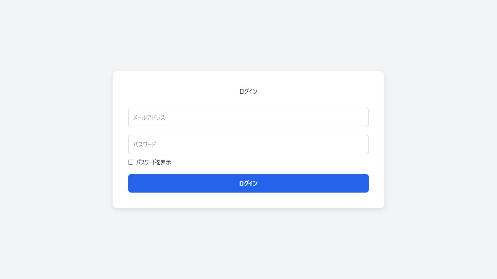

Javaによる業務システム開発
Struts、Nablarch、Spring Bootを使用し、エネルギー・通信領域などの業務システムで機能追加、障害調査、SQL修正、バッチ改修に携わってきました。
About
開発経験は満4年です。エネルギー・通信領域などの業務システムで、Javaを中心に開発・保守を担当してきました。 基本設計からリリースまで一連の工程を経験し、現在はその経験を活かしながら、Reactによるフロントエンド実装、API連携、認証、クラウド公開まで含めたWebアプリ制作に取り組んでいます。
Experience
Struts、Nablarch、Spring Bootを使用し、エネルギー・通信領域などの業務システムで機能追加、障害調査、SQL修正、バッチ改修に携わってきました。
基本設計、詳細設計、製造、テスト、リリースまで一通りの工程を経験。10人規模のチームで、既存仕様と影響範囲を確認しながら対応します。
Oracle、PostgreSQL、DB2を使用したデータ調査・SQL修正に加え、HTML/CSS/JavaScript/jQueryを用いた画面側の改修経験があります。
Skills
Java、Struts、Nablarch、Spring Bootを中心に、業務ロジック、REST API、JWT認証、DB連携を実装します。
機能追加、障害調査、SQL修正、バッチ改修に対応。Oracle、PostgreSQL、DB2を使用した保守経験があります。
HTML/CSS/JavaScript/jQueryの実務経験に加え、Reactで画面を実装。AWS初級資格の知識も活かしながら、Vercel・Renderで公開します。
Works

Full-stack Web App
JWT認証つきのタスク管理アプリです。ログイン、タスク一覧、登録、編集、削除を実装し、バックエンドはRender、フロントエンドはVercelで公開しています。
Process
基本設計からリリースまでの経験を活かし、既存処理や影響範囲を確認して安定した改修を行います。
バックエンドだけ、画面だけで終わらせず、利用者が操作できる状態にします。
デモURL、テストアカウント、READMEを用意し、第三者が確認しやすい状態に整えます。